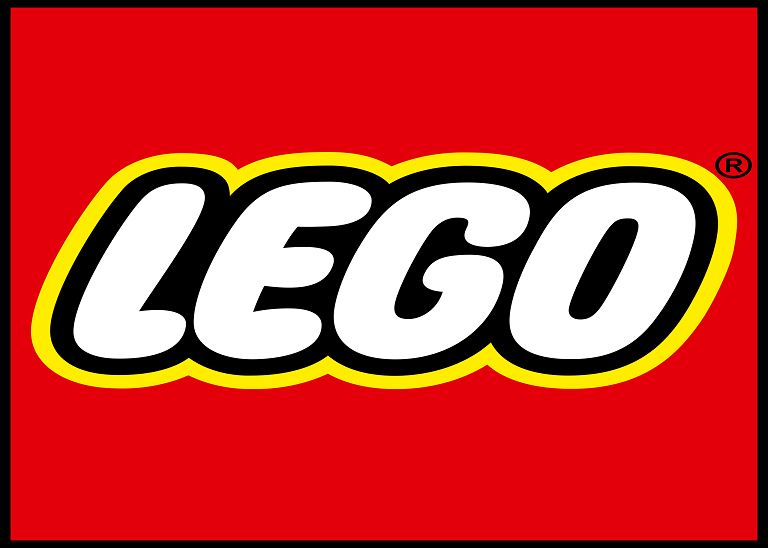
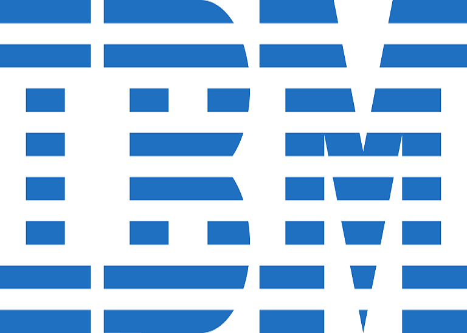

Case de sucesso LEGO
A Lego é uma empresa que implementou o Scrum em sua gestão de projetos.
Saiba maisCase de sucesso Google
O Google é uma das empresas que tem se destacado no uso do Scrum em seus projetos de software.
Saiba mais
Case de sucesso SPOTIFY
A implementação do Scrum na Spotify é um exemplo de como o framework pode ser adaptado.
Saiba maisCase de sucesso Microsoft
A Microsoft é uma das empresas que adotaram o Scrum como metodologia ágil de desenvolvimento.
Saiba mais

Case de sucesso IBM
A implementação do Scrum na IBM é baseada em equipes autônomas trabalhando em áreas específicas.
Saiba maisCase de sucesso AMAZON
A Lego é uma empresa que implementou o Scrum em sua gestão de projetos.
Saiba mais